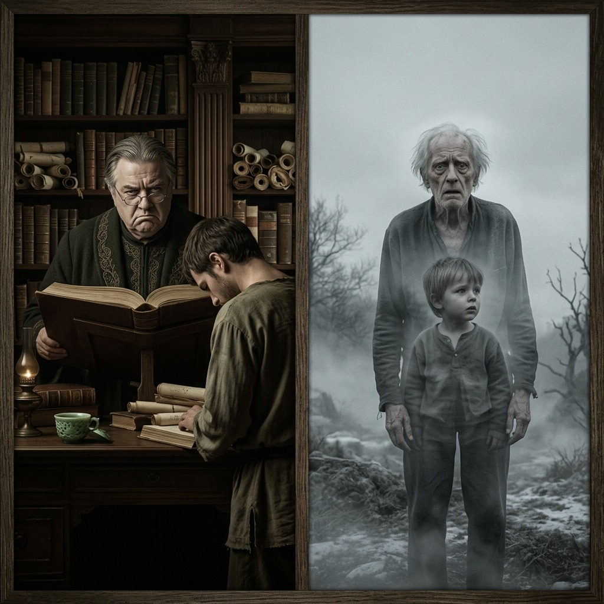
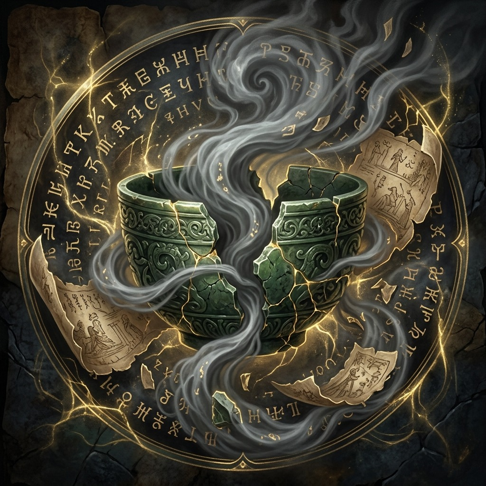
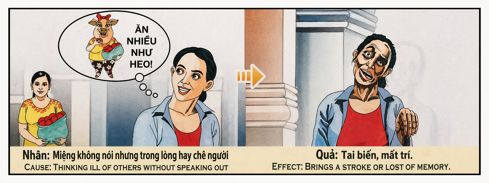

La Niebla del Juicio Silencioso The Fog of Silent Judgment La nebbia del giudizio silenzioso 沉默审判的迷雾 ضباب الحكم الصامت Туман молчаливого суда Der Nebel des stillen Urteils Le brouillard du jugement silencieux 沈黙の裁きの霧 A Névoa do Julgamento Silencioso Sương Mù Của Phán Xét Thầm Lặng
"La lengua que calla no absuelve al corazón que condena en las sombras; pues quien teje juicios silenciosos y niega la verdad al inocente, verá su propia mente disolverse en la niebla y su memoria naufragar en el mar del olvido." "The tongue that remains silent does not absolve the heart that condemns in the shadows; for he who weaves silent judgments and denies the truth to the innocent shall watch his own mind dissolve into fog and his memory shipwreck in the sea of oblivion." "La lingua che tace non assolve il cuore che condanna nell'ombra; perché chi tesse giudizi muti e nega la verità agli innocenti, vedrà la propria mente dissolversi nella nebbia e la sua memoria naufragare nel mare dell'oblio." “沉默的舌头并不能宽恕在阴影中谴责的心；因为无论谁编织沉默的审判并向无辜者否认真相，他都会看到自己的思想溶解在迷雾中，他的记忆在遗忘之海中沉没。” "اللسان الصامت لا يعفي القلب الذي يدين في الظل، فمن ينسج الأحكام الصامتة وينكر الحقيقة للأبرياء، سيرى عقله يذوب في الضباب وسفينة ذاكرته تتحطم في بحر النسيان." «Язык, который молчит, не освобождает сердца, которое осуждает в тени; ибо тот, кто плетет молчаливые суждения и отказывает в истине невиновным, увидит, как его собственный разум растворяется в тумане, а его память терпит кораблекрушение в море забвения». „Die Zunge, die schweigt, entbindet nicht das Herz, das im Schatten verurteilt; denn wer stille Urteile fällt und den Unschuldigen die Wahrheit verweigert, wird sehen, wie sich sein eigener Geist im Nebel auflöst und seine Erinnerung im Meer des Vergessens Schiffbruch erleidet.“ "La langue qui se tait n'absout pas le cœur qui condamne dans l'ombre ; car celui qui tisse des jugements silencieux et nie la vérité aux innocents verra son propre esprit se dissoudre dans le brouillard et sa mémoire faire naufrage dans la mer de l'oubli." 「沈黙の舌は、影で非難する心を赦しません。なぜなら、沈黙の判決を紡ぎ、無実の人々に真実を否定する者は、自分の心が霧の中に溶け、自分の記憶が忘却の海で難破するのを見ることになるからです。」 “A língua que se cala não absolve o coração que condena nas sombras; pois quem tece julgamentos silenciosos e nega a verdade aos inocentes, verá sua própria mente se dissolver na neblina e sua memória naufragar no mar do esquecimento.” "Lưỡi lặng câm không thể rửa tội cho một trái tim phán xét trong bóng tối; bởi kẻ gieo rắc những định kiến thầm lặng và từ chối bênh vực người vô tội sẽ thấy tâm trí mình tan biến vào sương mù và ký ức chìm đắm giữa đại dương lãng quên."
En los intrincados laberintos de la conciencia humana, existe un error sutil pero de consecuencias demoledoras: el juicio silencioso. El alma suele creer que mientras sus palabras sean limpias y su rostro mantenga una máscara de cortesía, sus pensamientos están libres de culpa. Sin embargo, el karma no se teje únicamente con el hilo de las acciones visibles, sino con el éter invisible de nuestra intención más íntima. Pensar mal de otros en secreto, albergar sospechas injustas y alimentar el veneno del prejuicio en el santuario del corazón es una profanación que el universo registra con perfecta y matemática precisión.
El peligro supremo de este juicio silencioso se revela cuando tenemos la oportunidad de defender al inocente y elegimos callar. Bajo el pretexto cobarde de 'no buscar problemas' o de que la víctima 'seguramente oculta algo malo', permitimos que la injusticia florezca en el mundo. Quien calla la verdad para proteger su propia comodidad, estando en posesión de la inocencia ajena, se convierte en cómplice directo de la mentira. En la balanza del cosmos, no hay diferencia entre el que enciende la hoguera de la calumnia y el que, teniendo el agua en sus manos, da la espalda al fuego en silencio.
Esta transgresión espiritual produce una retribución directa en el núcleo del alma: la disolución de la propia mente. Cuando una persona dedica su intelecto a tejer calumnias secretas y a justificar el dolor ajeno en las sombras, congestiona su canal mental con una bruma densa de negatividad. El cerebro, que fue diseñado para ser un receptor de la verdad y de la luz universal, se ve asfixiado por su propia toxicidad oculta. En la física del karma, la consecuencia natural de tapar la verdad para los demás es que el universo, con el tiempo, tapará la verdad y la luz para uno mismo.
En esta vida, este bloqueo energético se manifiesta al envejecer en forma de un accidente cerebrovascular (ictus) o una demencia progresiva que borra la memoria. La mente, que en su orgullo creyó engañar al mundo con su silencio cortés, se ve atrapada en su propio laberinto de sombras, incapaz de recordar los rostros amados, las palabras de afecto o el camino de regreso a casa. Y en la siguiente encarnación, este karma se amplifica, manifestándose como un nacimiento marcado por la amnesia congénita y un intelecto fragmentado. El alma renace en un vacío de aprendizaje, experimentando el doloroso destierro de la memoria por haber desterrado la verdad del inocente.
Within the intricate labyrinths of human consciousness, there exists an error, subtle yet devastating in its consequences: silent judgment. The soul often believes that as long as its words are clean and its face maintains a mask of courtesy, its thoughts remain free of blame. However, karma is not woven solely from the threads of visible actions, but from the invisible ether of our innermost intentions. To think ill of others in secret, to harbor unjust suspicions, and to feed the poison of prejudice within the sanctuary of the heart is a desecration that the universe records with perfect and mathematical precision.
The supreme danger of this silent judgment is revealed when we have the opportunity to defend the innocent and choose to remain silent instead. Under the cowardly pretext of 'avoiding trouble' or believing that the victim 'surely must hide something bad,' we allow injustice to flourish in the world. He who silences the truth to protect his own comfort, while holding the key to another's innocence, becomes a direct accomplice to the lie. In the cosmos's scales, there is no difference between the one who lights the bonfire of slander and the one who, holding the water in his hands, silently turns his back on the fire.
This spiritual transgression produces a direct retribution in the core of the soul: the dissolution of one's own mind. When a person dedicates their intellect to weaving secret slanders and justifying another's pain in the shadows, they congest their mental channel with a dense mist of negativity. The brain, designed to be a receiver of truth and universal light, is suffocated by its own hidden toxicity. In the physics of karma, the natural consequence of hiding the truth from others is that the universe, over time, will hide the truth and light from oneself.
In this life, this energy block manifests in old age as a stroke (ictus) or progressive dementia that erases memory. The mind, which in its pride believed it could fool the world with polite silence, is caught in its own labyrinth of shadows, unable to recall beloved faces, words of affection, or the way home. And in the next incarnation, this karma is amplified, manifesting as a birth marked by congenital amnesia and a fragmented intellect. The soul is reborn into a void of learning, experiencing the painful exile of memory for having exiled the truth of the innocent.
Negli intricati labirinti della coscienza umana, c'è un errore sottile ma dalle conseguenze devastanti: il giudizio silenzioso. L'anima spesso crede che finché le sue parole sono pulite e il suo volto mantiene una maschera di gentilezza, i suoi pensieri sono liberi dalla colpa. Tuttavia il karma non è intessuto unicamente con il filo delle azioni visibili, ma con l'etere invisibile della nostra intenzione più intima. Pensare segretamente male degli altri, nutrire sospetti ingiusti e alimentare il veleno del pregiudizio nel santuario del cuore è una profanazione che l’universo registra con perfetta precisione matematica.
Il pericolo supremo di questo giudizio silenzioso si rivela quando abbiamo l’opportunità di difendere gli innocenti e scegliamo di rimanere in silenzio. Con il vile pretesto di "non cercare guai" o che la vittima "sicuramente nasconde qualcosa di brutto", permettiamo che l'ingiustizia fiorisca nel mondo. Chi tace la verità per tutelare il proprio conforto, possedendo l'innocenza altrui, diventa complice diretto della menzogna. Nell'equilibrio del cosmo non c'è differenza tra chi accende il falò della calunnia e chi, avendo l'acqua tra le mani, volta in silenzio le spalle al fuoco.
Questa trasgressione spirituale produce una retribuzione diretta al centro dell'anima: la dissoluzione della propria mente. Quando una persona dedica il suo intelletto a tessere calunnie segrete e a giustificare nell'ombra il dolore degli altri, congestiona il suo canale mentale con una densa foschia di negatività. Il cervello, progettato per essere un ricettacolo di verità e luce universale, è soffocato dalla sua stessa tossicità nascosta. Nella fisica del karma, la conseguenza naturale dell’occultare la verità per gli altri è che l’universo, col tempo, nasconderà la verità e la luce per noi stessi.
In questa vita, questo blocco energetico si manifesta con l’avanzare dell’età sotto forma di incidente cerebrovascolare (ictus) o di demenza progressiva che cancella la memoria. La mente, che nel suo orgoglio credeva di ingannare il mondo con il suo educato silenzio, si ritrova intrappolata nel proprio labirinto di ombre, incapace di ricordare i volti amati, le parole d'affetto o la via del ritorno a casa. E nella successiva incarnazione, questo karma viene amplificato, manifestandosi come una nascita segnata da un'amnesia congenita e da un intelletto frammentato. L'anima rinasce nel vuoto dell'apprendimento, sperimentando il doloroso esilio della memoria per aver esiliato la verità degli innocenti.
在人类意识的错综复杂的迷宫中，存在着一个微妙的错误，但却带来了毁灭性的后果：沉默的判断。灵魂常常相信，只要它的言语是干净的，它的脸上保持着礼貌的面具，它的思想就没有罪恶感。然而，业力并不仅仅与可见的行为编织在一起，而是与我们最亲密的意图的无形以太编织在一起。暗中对他人怀有恶意、抱有不公正的怀疑，并在心灵的庇护所中注入偏见的毒药，是宇宙以完美的数学精确度记录的亵渎行为。
当我们有机会保护无辜者并选择保持沉默时，这种沉默审判的最大危险就会显现出来。在“不找麻烦”或受害者“肯定隐瞒了一些不好的事情”的懦弱借口下，我们允许不公正现象在世界上盛行。那些为了保护自己的舒适而对真相保持沉默的人，占有他人的清白，就成为谎言的直接帮凶。在宇宙的平衡中，点燃诽谤之火的人和手握水默默背弃火的人没有什么区别。
这种精神上的越轨会在灵魂的核心产生直接的报应：心灵的消解。当一个人将自己的智力奉献给秘密诽谤并在暗中为他人的痛苦辩护时，他的精神通道就会被浓重的消极阴霾所堵塞。大脑原本是真理和宇宙之光的接受者，但它却因其自身隐藏的毒性而窒息。在业力物理学中，为他人掩盖真相的自然后果是，随着时间的推移，宇宙将为自己掩盖真相和光明。
在这一生中，随着我们年龄的增长，这种能量阻塞会以脑血管意外（中风）或进行性痴呆的形式表现出来，从而消除记忆。心灵骄傲地相信自己可以用礼貌的沉默来欺骗世界，却发现自己被困在自己的阴影迷宫中，无法记住心爱的面孔、深情的话语或回家的路。而在下一世，这种业力会被放大，表现为先天性失忆和智力碎片的出生。灵魂在学习的空虚中重生，经历着因驱逐无辜者的真相而痛苦的记忆驱逐。
في متاهات الوعي البشري المعقدة، هناك خطأ خفي ولكن له عواقب مدمرة: الحكم الصامت. كثيرًا ما تعتقد النفس أنه ما دامت كلماتها نظيفة، وحافظ وجهها على قناع الأدب، فإن أفكارها خالية من الذنب. ومع ذلك، فإن الكارما ليست منسوجة فقط بخيط الأفعال المرئية، ولكن بالأثير غير المرئي لنوايانا الأكثر حميمية. إن الظن السيء بالآخرين سرًا، وإيواء الشكوك الظالمة، وتغذية سم التحيز في حرم القلب هو تدنيس يسجله الكون بدقة رياضية مثالية.
ويتجلى الخطر الأعظم لهذا الحكم الصامت عندما تتاح لنا الفرصة للدفاع عن الأبرياء واختيار التزام الصمت. تحت الذريعة الجبانة المتمثلة في "عدم البحث عن المشاكل" أو أن الضحية "بالتأكيد تخفي شيئًا سيئًا"، فإننا نسمح للظلم بالازدهار في العالم. أولئك الذين يصمتون عن الحقيقة لحماية راحتهم، كونهم يمتلكون براءة الآخرين، يصبحون شريكًا مباشرًا في الكذب. في ميزان الكون لا فرق بين من يوقد نار الافتراء ومن في يديه ماء يدير ظهره للنار في صمت.
هذا الانتهاك الروحي ينتج عنه عقاب مباشر في جوهر الروح: انحلال عقل الإنسان. عندما يكرس شخص ما عقله لنسج الافتراءات السرية وتبرير آلام الآخرين في الظل، فإنه يملأ قناته العقلية بضباب كثيف من السلبية. إن الدماغ، الذي تم تصميمه ليكون متلقيًا للحقيقة والنور العالمي، يختنق بسبب سميته الخفية. في فيزياء الكارما، النتيجة الطبيعية لإخفاء الحقيقة عن الآخرين هي أن الكون، مع مرور الوقت، سيغطي الحقيقة والنور لنفسه.
في هذه الحياة، يتجلى انسداد الطاقة هذا مع تقدمنا في السن في شكل حادث وعائي دماغي (سكتة دماغية) أو خرف تدريجي يمحو الذاكرة. العقل، الذي يعتقد في كبريائه أنه يخدع العالم بصمته المهذب، يجد نفسه محاصرًا في متاهة الظلال الخاصة به، غير قادر على تذكر الوجوه المحبوبة، أو كلمات المودة أو طريق العودة إلى المنزل. وفي التجسد التالي، يتم تضخيم هذه الكارما، وتظهر على شكل ولادة تتميز بفقدان الذاكرة الخلقي والذكاء المجزأ. تولد الروح من جديد في فراغ من التعلم، وتختبر النفي المؤلم للذاكرة لأنها نفت حقيقة الأبرياء.
В запутанных лабиринтах человеческого сознания есть тонкая ошибка, но с разрушительными последствиями: молчаливое суждение. Душа часто верит, что пока ее слова чисты и лицо сохраняет маску вежливости, ее мысли свободны от вины. Однако карма соткана не только из нити видимых действий, но и из невидимого эфира нашего самого сокровенного намерения. Тайно думать плохо о других, питать несправедливые подозрения и питать яд предрассудков в святилище сердца — это осквернение, которое Вселенная фиксирует с совершенной математической точностью.
Высшая опасность этого молчаливого приговора раскрывается, когда у нас есть возможность защитить невиновных и решить хранить молчание. Под трусливым предлогом «не ищу неприятностей» или того, что жертва «наверняка скрывает что-то плохое», мы позволяем несправедливости процветать в мире. Те, кто хранит молчание об истине ради защиты собственного комфорта, обладая невиновностью других, становятся прямыми соучастниками лжи. В балансе космоса нет разницы между тем, кто разжигает костер клеветы, и тем, кто, имея в руках воду, молча отворачивается от огня.
Это духовное преступление вызывает прямое возмездие в глубине души: растворение разума. Когда человек посвящает свой интеллект плетению тайной клеветы и оправданию чужой боли в тени, он засоряет свой мыслительный канал густой дымкой негатива. Мозг, который был создан, чтобы воспринимать истину и универсальный свет, задыхается от собственной скрытой токсичности. В физике кармы естественным следствием сокрытия правды для других является то, что Вселенная со временем скроет правду и свет для вас самих.
В этой жизни эта энергетическая блокировка проявляется по мере старения в форме нарушения мозгового кровообращения (инсульта) или прогрессирующей деменции, которая стирает память. Разум, который в своей гордости считал, что своим вежливым молчанием обманывает мир, оказывается в ловушке собственного лабиринта теней, неспособный вспомнить ни любимые лица, ни слова любви, ни дорогу домой. А в следующем воплощении эта карма усиливается, проявляясь в рождении, отмеченном врожденной амнезией и фрагментарностью интеллекта. Душа возрождается в пустоте познания, испытывая болезненное изгнание памяти за изгнание истины невинных.
In den komplizierten Labyrinthen des menschlichen Bewusstseins gibt es einen subtilen Fehler, der jedoch verheerende Folgen hat: stilles Urteilen. Die Seele glaubt oft, dass ihre Gedanken frei von Schuldgefühlen sind, solange ihre Worte rein sind und ihr Gesicht eine Maske der Höflichkeit behält. Karma ist jedoch nicht nur mit dem Faden sichtbarer Handlungen verwoben, sondern mit dem unsichtbaren Äther unserer intimsten Absicht. Insgeheim schlecht über andere zu denken, ungerechtfertigte Verdächtigungen zu hegen und das Gift der Vorurteile im Heiligtum des Herzens zu nähren, ist eine Entweihung, die das Universum mit perfekter, mathematischer Präzision aufzeichnet.
Die größte Gefahr dieses stillen Urteils wird deutlich, wenn wir die Möglichkeit haben, die Unschuldigen zu verteidigen und uns dafür entscheiden, zu schweigen. Unter dem feigen Vorwand, „keinen Ärger zu suchen“ oder dass das Opfer „sicherlich etwas Schlimmes verbirgt“, lassen wir zu, dass Ungerechtigkeit in der Welt gedeiht. Wer über die Wahrheit schweigt, um sein eigenes Wohlergehen zu schützen, und im Besitz der Unschuld anderer ist, wird zum direkten Komplizen der Lüge. Im Gleichgewicht des Kosmos gibt es keinen Unterschied zwischen dem, der das Lagerfeuer der Verleumdung entzündet, und dem, der mit Wasser in den Händen dem Feuer schweigend den Rücken kehrt.
Diese spirituelle Übertretung führt zu direkter Vergeltung im Innersten der Seele: zur Auflösung des eigenen Geistes. Wenn ein Mensch seinen Intellekt darauf verwendet, heimliche Verleumdungen zu weben und den Schmerz anderer Menschen im Schatten zu rechtfertigen, verstopft er seinen mentalen Kanal mit einem dichten Dunst der Negativität. Das Gehirn, das als Empfänger der Wahrheit und des universellen Lichts konzipiert wurde, wird durch seine eigene verborgene Giftigkeit erstickt. In der Karma-Physik besteht die natürliche Konsequenz des Vertuschens der Wahrheit vor anderen darin, dass das Universum mit der Zeit die Wahrheit und das Licht vor einem selbst vertuschen wird.
In diesem Leben manifestiert sich diese Energieblockade mit zunehmendem Alter in Form eines Schlaganfalls oder einer fortschreitenden Demenz, die das Gedächtnis löscht. Der Geist, der in seinem Stolz glaubte, die Welt mit seinem höflichen Schweigen zu täuschen, ist in seinem eigenen Labyrinth aus Schatten gefangen und kann sich nicht an die geliebten Gesichter, die Worte der Zuneigung oder den Weg zurück nach Hause erinnern. Und in der nächsten Inkarnation verstärkt sich dieses Karma und manifestiert sich in einer Geburt, die von angeborener Amnesie und einem fragmentierten Intellekt geprägt ist. Die Seele wird in einer Leere des Lernens wiedergeboren und erlebt die schmerzhafte Verbannung der Erinnerung daran, dass sie die Wahrheit der Unschuldigen verbannt hat.
Dans les labyrinthes complexes de la conscience humaine, il existe une erreur subtile mais aux conséquences dévastatrices : le jugement silencieux. L’âme croit souvent que tant que ses paroles sont pures et que son visage garde un masque de politesse, ses pensées sont exemptes de culpabilité. Cependant, le karma n’est pas tissé uniquement avec le fil des actions visibles, mais avec l’éther invisible de notre intention la plus intime. Penser secrètement du mal des autres, nourrir des soupçons injustes et alimenter le poison des préjugés dans le sanctuaire du cœur est une profanation que l'univers enregistre avec une précision mathématique parfaite.
Le danger suprême de ce jugement silencieux se révèle lorsque nous avons la possibilité de défendre des innocents et de choisir de garder le silence. Sous le lâche prétexte de « ne pas chercher les ennuis » ou que la victime « cache sûrement quelque chose de mauvais », nous laissons l'injustice prospérer dans le monde. Ceux qui gardent le silence sur la vérité pour protéger leur propre confort, étant en possession de l’innocence des autres, deviennent complices directs du mensonge. Dans l’équilibre du cosmos, il n’y a aucune différence entre celui qui allume le feu de la calomnie et celui qui, ayant de l’eau dans les mains, tourne le dos au feu en silence.
Cette transgression spirituelle produit une rétribution directe au cœur de l'âme : la dissolution de l'esprit. Lorsqu'une personne consacre son intellect à tisser des calomnies secrètes et à justifier la douleur des autres dans l'ombre, elle encombre son canal mental avec une brume dense de négativité. Le cerveau, qui a été conçu pour recevoir la vérité et la lumière universelle, est étouffé par sa propre toxicité cachée. Dans la physique du karma, la conséquence naturelle du fait de dissimuler la vérité aux autres est que l’univers, au fil du temps, dissimulera la vérité et la lumière pour soi-même.
Dans cette vie, ce blocage énergétique se manifeste à mesure que l’on vieillit sous la forme d’un accident vasculaire cérébral (accident vasculaire cérébral) ou d’une démence progressive qui efface la mémoire. L'esprit, qui, dans son orgueil, croyait tromper le monde par son silence poli, se retrouve piégé dans son propre labyrinthe d'ombres, incapable de se souvenir des visages aimés, des mots d'affection ou du chemin du retour. Et dans l’incarnation suivante, ce karma est amplifié, se manifestant par une naissance marquée par une amnésie congénitale et un intellect fragmenté. L'âme renaît dans un vide d'apprentissage, expérimentant le bannissement douloureux de la mémoire pour avoir banni la vérité des innocents.
人間の意識の複雑な迷路には、壊滅的な結果をもたらす微妙な誤り、つまり沈黙の判断が存在します。魂は、自分の言葉がきれいで、顔が礼儀正しさの仮面を維持している限り、自分の考えには罪悪感がないと信じていることがよくあります。しかし、カルマは目に見える行為の糸だけで織り込まれているのではなく、私たちの最も親密な意図という目に見えないエーテルと織り込まれています。密かに他人を悪く思い、不当な疑惑を抱き、心の聖域に偏見の毒を注ぐことは、宇宙が完璧な数学的精度で記録する冒涜です。
この沈黙の判決の最大の危険性は、私たちが無実の人々を擁護し、沈黙を続けることを選択する機会を得たときに明らかになります。 「トラブルを望んでいない」、あるいは被害者は「間違いなく何か悪いことを隠している」という卑怯な口実の下で、私たちは世界で不正義が蔓延することを許しています。自分の安らぎを守るために真実について沈黙し、他人の無実を手に入れた人々は、嘘の直接の共犯者となる。宇宙の均衡においては、中傷の焚き火を灯す者と、水を手にして黙って火に背を向ける者との間に違いはない。
この霊的な罪は、魂の核心に直接的な報復、つまり精神の崩壊を引き起こします。人が知性を捧げて秘密の中傷を織り交ぜ、影で他人の痛みを正当化すると、その人の精神経路は否定的な濃いもやで混雑します。真実と普遍的な光を受け取るように設計された脳は、自らの隠れた毒性によって窒息死しています。カルマの物理学では、他人のために真実を隠すことの自然な結果は、時間が経つにつれて宇宙が自分自身の真実と光を隠すことになります。
この世では、このエネルギーの遮断は、加齢とともに脳血管障害（脳卒中）や記憶を消去する進行性の認知症という形で現れます。礼儀正しい沈黙で世界を欺いていると高慢に信じていた心は、自分自身の影の迷宮に閉じ込められ、愛する人の顔も、愛情の言葉も、家に帰る道も思い出せないことに気づきます。そして次の転生では、このカルマは増幅され、先天性健忘症と断片化した知性を特徴とする誕生として現れます。魂は学習の空白の中で生まれ変わり、罪のない人々の真実を追放したことによる苦痛な記憶の追放を経験します。
Nos intrincados labirintos da consciência humana, existe um erro sutil, mas com consequências devastadoras: o julgamento silencioso. A alma muitas vezes acredita que enquanto suas palavras forem limpas e seu rosto mantiver uma máscara de polidez, seus pensamentos estarão livres de culpa. Porém, o carma não está tecido apenas com o fio das ações visíveis, mas com o éter invisível da nossa intenção mais íntima. Pensar mal dos outros secretamente, abrigar suspeitas injustas e alimentar o veneno do preconceito no santuário do coração é uma profanação que o universo registra com precisão matemática perfeita.
O perigo supremo deste julgamento silencioso revela-se quando temos a oportunidade de defender os inocentes e escolhemos permanecer em silêncio. Sob o pretexto covarde de “não procurar problemas” ou de que a vítima “certamente esconde algo ruim”, permitimos que a injustiça floresça no mundo. Quem se cala sobre a verdade para proteger o seu próprio conforto, estando na posse da inocência dos outros, torna-se cúmplice direto da mentira. No equilíbrio do cosmos, não há diferença entre aquele que acende a fogueira da calúnia e aquele que, tendo água nas mãos, dá as costas ao fogo em silêncio.
Esta transgressão espiritual produz retribuição direta no âmago da alma: a dissolução da mente. Quando uma pessoa dedica seu intelecto a tecer calúnias secretas e a justificar a dor de outras pessoas nas sombras, ela congestiona seu canal mental com uma densa névoa de negatividade. O cérebro, que foi concebido para ser um receptor da verdade e da luz universal, está sufocado pela sua própria toxicidade oculta. Na física do carma, a consequência natural de encobrir a verdade para os outros é que o universo irá, com o tempo, encobrir a verdade e a luz para si mesmo.
Nesta vida, esse bloqueio energético se manifesta à medida que envelhecemos na forma de acidente vascular cerebral (AVC) ou demência progressiva que apaga a memória. A mente, que no seu orgulho acreditava enganar o mundo com o seu silêncio educado, encontra-se presa no seu próprio labirinto de sombras, incapaz de se lembrar dos rostos amados, das palavras de carinho ou do caminho de regresso a casa. E na próxima encarnação, esse carma é amplificado, manifestando-se como um nascimento marcado por amnésia congênita e intelecto fragmentado. A alma renasce num vazio de aprendizado, experimentando o doloroso banimento da memória por ter banido a verdade dos inocentes.
Trong những mê cung chằng chịt của ý thức con người, tồn tại một sai lầm âm thầm nhưng để lại hậu quả vô cùng tàn khốc: phán xét thầm lặng. Linh hồn thường tin rằng chỉ cần lời nói của mình luôn lịch sự và gương mặt giữ được lớp mặt nạ xã giao thì những suy nghĩ bên trong sẽ không mang tội. Thế nhưng, nghiệp quả không chỉ được dệt nên bởi những sợi chỉ hành động hữu hình, mà bằng cả cõi khí vô hình của tâm ý sâu kín nhất. Âm thầm nghĩ xấu về người khác, nuôi dưỡng những hoài nghi bất công và dung dưỡng độc tố của định kiến trong thánh đường của trái tim là một sự u uế mà vũ trụ luôn ghi nhận với độ chính xác tuyệt đối.
Mối nguy hại tột cùng của sự phán xét lặng câm này lộ rõ khi chúng ta có cơ hội bênh vực người vô tội nhưng lại chọn cách im lặng. Dưới cái cớ hèn nhát như 'tránh rước rắc rối vào thân' hay tự nhủ rằng nạn nhân 'chắc hẳn phải làm điều gì mờ ám', chúng ta để cho sự bất công tự do hoành hành. Kẻ che giấu sự thật để bảo vệ sự an nhàn của bản thân, dù biết rõ sự trong sạch của người khác, đã trở thành kẻ đồng lõa trực tiếp với sự dối trá. Trên bàn cân vũ trụ, không có sự khác biệt giữa kẻ châm ngọn lửa vu khống và kẻ cầm nước trong tay nhưng lại lặng lẽ quay lưng bước đi.
Sự vi phạm tâm linh này mang lại một sự quả báo trực tiếp vào sâu thẳm linh hồn: sự tiêu biến của chính tâm trí. Khi một người dùng trí tuệ của mình để dệt nên những lời dèm pha thầm kín và biện minh cho nỗi đau của người khác trong bóng tối, họ làm tắc nghẽn kênh tâm linh của mình bằng một làn sương mù tiêu cực dày đặc. Bộ não, vốn được thiết kế để đón nhận sự thật và ánh sáng vũ trụ, bị bóp nghẹt bởi chính độc tố ẩn giấu của nó. Trong quy luật nghiệp báo, hậu quả tự nhiên của việc che giấu sự thật đối với người khác là vũ trụ, theo thời gian, sẽ che khuất sự thật và ánh sáng đối với chính họ.
Trong kiếp sống này, sự tắc nghẽn năng lượng đó sẽ biểu hiện khi về già dưới dạng một cơn tai biến mạch máu não (ictus) hoặc hội chứng sa sút trí tuệ cướp đi ký ức. Tâm trí vốn tự kiêu nghĩ rằng mình có thể lừa dối thế gian bằng sự im lặng lịch thiệp, giờ đây bị mắc kẹt trong chính mê cung bóng tối của mình, không thể nhớ nổi gương mặt người thân yêu, những lời nói ấm áp hay lối nhỏ trở về nhà. Và trong kiếp sống tiếp theo, nghiệp quả này được khuếch đại, biểu hiện qua một sự ra đời mang theo hội chứng mất trí nhớ bẩm sinh và một trí tuệ vụn vỡ. Linh hồn tái sinh trong một khoảng trống không thể học hỏi, trải qua sự lưu đày đau đớn của ký ức vì đã từng lưu đày sự thật của người vô tội.
La Taza de Jade y el Mar del Olvido
The Jade Cup and the Sea of Forgetfulness
La Coppa di Giada e il Mare dell'Oblio
玉杯与忘海
كأس اليشم وبحر النسيان
Нефритовая чаша и море забвения
Der Jadebecher und das Meer der Vergesslichkeit
La Coupe de Jade et la Mer de l'Oubli
翡翠杯と忘却の海
A Taça de Jade e o Mar do Esquecimento
Chén Ngọc Và Biển Khổ Lãng Quên
En la prefectura de la alta montaña oriental, donde las brumas otoñales trepaban por los tejados de tejas oscuras, vivía un erudito y asesor gubernamental llamado Minh. Minh era célebre por su memoria prodigiosa: recordaba cada ley escrita en los pergaminos imperiales, los nombres de miles de ciudadanos y los poemas de los sabios antiguos. Era un hombre de modales exquisitos y cortesía impecable, pero en el fondo de su ser albergaba una mente implacable y llena de prejuicios. Juzgaba a todos en silencio, especialmente a los sirvientes y campesinos, a quienes consideraba deshonestos por naturaleza. Un día, en la biblioteca del gobernador, el sobrino mimado de este, en un descuido, derribó y rompió en dos una invaluable taza de té de jade, un tesoro imperial único. El joven huyó asustado, y cuando el gobernador descubrió el desastre, todas las sospechas recayeron sobre Liêm, un joven ayudante huérfano de alma limpia que se dedicaba a limpiar los libros con infinita paciencia.
Minh, oculto tras una estantería, había presenciado todo el incidente y sabía perfectamente que Liêm era completamente inocente. Sin embargo, cuando el gobernador mandó a llamar a Minh para preguntarle si sabía algo, el erudito miró a Liêm y pensó en su fuero interno: 'Este huérfano miserable es de baja cuna; si no roba hoy, robará mañana. No vale la pena que arriesgue mi reputación ni que acuse al sobrino del gobernador para salvarlo. Es mejor que cargue con la culpa'. Minh no pronunció una sola calumnia ni dijo una mentira abierta; simplemente sonrió con cortesía, agachó la cabeza y dijo: 'No he visto nada, ilustre gobernador'. Liêm, llorando desesperado y suplicando una justicia que nadie le dio, fue azotado con dureza y desterrado perpetuamente de la provincia bajo el estigma de la deshonra. Minh continuó su vida con su reputación intacta, complaciéndose en el silencio de su juicio secreto.
Los años pasaron y la siembra silenciosa de Minh dio su fruto helado. A los sesenta años, en la cúspide de su fama literaria, un repentino dolor le partió la cabeza como un rayo: Minh sufrió un ictus devastador. Sobrevivió, pero al despertar, la gran biblioteca de su mente se había disuelto en la nada. El hombre que recordaba miles de leyes y versos ya no recordaba el rostro de su devota esposa ni el nombre de sus propios hijos. Su intelecto perfecto fue sustituido por una niebla densa y desesperante. Pasó sus últimos años de vida en un rincón de su casa, mirando el vacío con ojos angustiados, balbuceando palabras sin sentido, buscando en vano los recuerdos que la vida le había arrebatado como retribución por la verdad que él había callado en su juventud. Vivió desterrado en el interior de su propio cuerpo.
Su muerte no puso fin a su deuda. En su siguiente encarnación, Minh renació bajo el nombre de An en una lejana aldea de pescadores. Desde su nacimiento, An mostró una amnesia congénita severa y un intelecto fragmentado. Su mente era como un pergamino mojado sobre el cual nada se podía escribir: olvidaba el rostro de su madre amorosa a los pocos minutos de alejarse, y era incapaz de recordar el camino de regreso a su humilde cabaña. Los niños de la aldea se burlaban de su mirada perdida y de su memoria rota. A menudo, An se sentaba en la orilla del mar, llorando en silencio mientras sentía una profunda opresión en el pecho, un eco doloroso y lejano de la verdad que su alma una vez juzgó y ocultó. Comprendió en su doloroso silencio que la mente que calla la verdad para complacer a su prejuicio se condena a vagar para siempre en la niebla del olvido.
In the prefecture of the high eastern mountain, where autumn mists climbed over dark tiled roofs, there lived a scholar and government advisor named Minh. Minh was celebrated for his prodigious memory: he remembered every law written in the imperial scrolls, the names of thousands of citizens, and the poems of ancient sages. He was a man of exquisite manners and impeccable courtesy, but deep within his being, he harbored a cold and highly prejudiced mind. He judged everyone in silence, especially servants and peasants, whom he considered inherently dishonest. One day, in the governor's library, the governor's spoiled nephew accidentally knocked down and shattered in half a priceless jade tea cup, a unique imperial treasure. The youth fled in fear, and when the governor discovered the disaster, all suspicion fell upon Liêm, a young orphan helper of clean soul who dedicated himself to cleaning books with infinite patience.
Minh, hidden behind a bookshelf, had witnessed the entire incident and knew perfectly well that Liêm was completely innocent. However, when the governor summoned Minh to ask if he knew anything, the scholar looked at Liêm and thought to himself: 'This miserable orphan is of low birth; if he does not steal today, he will steal tomorrow. It is not worth risking my reputation or accusing the governor's nephew to save him. It is better that he takes the blame.' Minh did not utter a single slander or tell an open lie; he simply smiled politely, bowed his head, and said: 'I have seen nothing, illustrious governor.' Liêm, weeping in despair and begging for a justice that no one gave him, was harshly whipped and perpetually banished from the province under the stigma of disgrace. Minh continued his life with his reputation intact, taking pleasure in the silence of his secret judgment.
The years passed, and Minh's silent sowing bore its icy fruit. At sixty years old, at the peak of his literary fame, a sudden pain split his head like lightning: Minh suffered a devastating stroke. He survived, but upon waking, the great library of his mind had dissolved into nothingness. The man who remembered thousands of laws and verses no longer remembered the face of his devoted wife or the names of his own children. His perfect intellect was replaced by a dense and agonizing fog. He spent the last years of his life in a corner of his house, staring at the void with distressed eyes, babbling meaningless words, searching in vain for the memories that life had stripped from him in retribution for the truth he had silenced in his youth. He lived exiled within his own body.
His death did not end his debt. In his next incarnation, Minh was reborn under the name of An in a distant fishing village. From birth, An showed severe congenital amnesia and a fragmented intellect. His mind was like a wet scroll upon which nothing could be written: he forgot the face of his loving mother within minutes of her walking away, and he was unable to remember the path back to his humble cabin. The village children mocked his lost gaze and broken memory. Often, An would sit on the seashore, weeping silently while feeling a deep tightness in his chest, a painful and distant echo of the truth that his soul had once judged and hidden. He understood in his painful silence that the mind that silences the truth to indulge its prejudice condemns itself to wander forever in the fog of oblivion.
Nella prefettura di alta montagna orientale, dove la nebbia autunnale si arrampicava sui tetti di tegole scure, viveva uno studioso e consigliere governativo di nome Minh. Minh era famoso per la sua memoria prodigiosa: ricordava ogni legge scritta nelle pergamene imperiali, i nomi di migliaia di cittadini e le poesie degli antichi saggi. Era un uomo dai modi squisiti e dalla cortesia impeccabile, ma nel profondo nutriva una mente implacabile e piena di pregiudizi. Giudicava tutti in silenzio, soprattutto i servi e i contadini, che considerava disonesti per natura. Un giorno, nella biblioteca del governatore, il nipote viziato del governatore rovesciò con noncuranza e spezzò in due una tazza da tè di giada dal valore inestimabile, un tesoro imperiale unico. Il giovane fuggì spaventato, e quando il governatore scoprì il disastro, ogni sospetto cadde su Liêm, un giovane assistente orfano dall'animo pulito che si dedicava alla pulizia dei libri con infinita pazienza.
Minh, nascosto dietro uno scaffale, aveva assistito all'intero incidente e sapeva perfettamente che Liêm era completamente innocente. Tuttavia, quando il governatore mandò a chiamare Minh per chiedergli se sapeva qualcosa, lo studioso guardò Liêm e pensò tra sé: 'Questo miserabile orfano è di umili origini; Se non ruba oggi, ruberà domani. Non vale la pena rischiare la reputazione o accusare il nipote del governatore per salvarlo. È meglio che sia lui a prendersi la colpa.' Minh non ha pronunciato una sola calunnia né ha detto una totale bugia; Lui sorrise semplicemente educatamente, chinò la testa e disse: "Non ho visto niente, illustre governatore". Liêm, piangendo disperato e implorando giustizia che nessuno gli diede, fu duramente frustato e bandito perennemente dalla provincia sotto lo stigma del disonore. Minh continuò la sua vita con la reputazione intatta, godendosi il silenzio del suo processo segreto.
Gli anni passarono e la semina silenziosa di Minh diede i suoi frutti. All'età di sessant'anni, all'apice della fama letteraria, un dolore improvviso gli squarciò la testa come un fulmine: Minh fu colpito da un ictus devastante. Sopravvisse, ma quando si svegliò, la grande biblioteca della sua mente si era dissolta nel nulla. L'uomo che ricordava migliaia di leggi e versetti non ricordava più il volto della sua devota moglie o i nomi dei suoi figli. Il suo intelletto perfetto fu sostituito da una nebbia fitta e disperata. Trascorse gli ultimi anni della sua vita in un angolo della sua casa, fissando il vuoto con occhi angosciati, balbettando parole senza senso, cercando invano i ricordi che la vita gli aveva portato via come punizione per la verità che aveva taciuto in gioventù. Visse esiliato nel proprio corpo.
La sua morte non ha posto fine al suo debito. Nella sua incarnazione successiva, Minh rinacque sotto il nome di An in un lontano villaggio di pescatori. Dalla nascita, An ha mostrato una grave amnesia congenita e un intelletto frammentato. La sua mente era come una pergamena bagnata su cui non si poteva scrivere nulla: aveva dimenticato il volto della sua amorevole madre pochi minuti dopo essersi allontanato e non era in grado di ricordare la strada per tornare alla sua umile capanna. I bambini del villaggio si prendevano gioco del suo sguardo perduto e della sua memoria spezzata. Spesso An si sedeva in riva al mare, piangendo in silenzio mentre sentiva una profonda stretta al petto, un'eco dolorosa e lontana della verità che la sua anima una volta giudicava e nascondeva. Comprese nel suo doloroso silenzio che la mente che mette a tacere la verità per compiacere i suoi pregiudizi è condannata a vagare per sempre nella nebbia dell'oblio.
在东部高山县，秋天的薄雾爬过深色的瓦屋顶，住着一位名叫明的学者和政府顾问。明以惊人的记忆力而闻名：他记得帝国卷轴上写的每一条法律、成千上万公民的名字以及古代圣人的诗歌。他是一个彬彬有礼、彬彬有礼的人，但内心深处却怀有一颗不可调和的偏见。他默默地评判每个人，尤其是仆人和农民，他认为他们生性不诚实。一日，总督书房内，总督娇生惯养的侄子不小心将一只价值连城的玉茶杯打翻，摔成两半，这是一件御宝。年轻人惊慌失措地逃走了，当总督发现这场灾难时，所有的怀疑都落在了Liêm身上，这位年轻的孤儿助手有着一颗纯洁的灵魂，以无限的耐心致力于清理账簿。
隐藏在书架后面的 Minh 目睹了整个事件，并且非常清楚 Liêm 是完全无辜的。然而，当总督派人去问明是否知道什么时，这位学者看着廉，心想：“这个可怜的孤儿出身低微，怎么办？”今天不偷，明天就会偷。不值得拿我的名誉去冒险，或者指责州长的侄子来拯救他。最好让他承担责任。明没有说过任何诽谤或彻头彻尾的谎言；他只是礼貌地笑笑，低头道：“尊贵的总督，我什么也没看见。”利亚姆绝望地哭泣，乞求没人给他伸张正义，结果遭到严厉鞭打，并以耻辱为名被永远驱逐出该省。明继续着他的名誉完好无损的生活，并享受着秘密审判的沉默。
岁月流逝，明的默默播种终于结出硕果。六十岁时，正值他文学名气的顶峰，突然的疼痛像闪电一样劈开他的头：明遭受了毁灭性的中风。他活了下来，但当他醒来时，他脑海中的大图书馆已经化为虚无。那个记住了数千条法律和诗句的人不再记得他忠诚的妻子的面孔或他自己孩子的名字。他完美的智力被浓重而绝望的迷雾所取代。他在家里的一个角落里度过了生命的最后几年，痛苦地凝视着天空，胡言乱语，徒劳地寻找生活从他身上夺走的记忆，作为对他年轻时保持沉默的真相的报应。他在自己的身体里过着放逐的生活。
他的死并没有结束他的债务。在他的下一世中，明以安的名字重生在一个遥远的渔村。安从出生起就表现出严重的先天性失忆症和支离破碎的智力。他的脑子就像一张湿漉漉的羊皮纸，上面什么也写不了：离开几分钟后，他就忘记了慈母的脸，也记不起回到简陋小屋的路。村里的孩子们取笑他失落的样子和破碎的记忆。安经常坐在海边，默默地哭泣，因为他感到胸口深深地发紧，这是他灵魂曾经判断和隐藏的真相的痛苦而遥远的回响。他在痛苦的沉默中明白，为了迎合偏见而压制真相的心灵注定会永远在遗忘的迷雾中徘徊。
في مقاطعة الجبال العالية الشرقية، حيث تسلق ضباب الخريف فوق الأسطح المكسوة بالبلاط الداكن، عاش عالم ومستشار حكومي يدعى مينه. واشتهر مينه بذاكرته المذهلة: فقد كان يتذكر كل قانون مكتوب في المخطوطات الإمبراطورية، وأسماء الآلاف من المواطنين، وقصائد الحكماء القدماء. لقد كان رجلاً يتمتع بأخلاق رائعة ومجاملة لا تشوبها شائبة، لكنه كان يحمل في أعماقه عقلًا عنيدًا ومتحيزًا. كان يحكم على الجميع بصمت، وخاصة الخدم والفلاحين الذين اعتبرهم غير أمناء بطبيعتهم. في أحد الأيام، في مكتبة الحاكم، قام ابن أخ الحاكم المدلل بإسقاط فنجان شاي من اليشم الذي لا يقدر بثمن وكسره إلى قسمين، وهو كنز إمبراطوري فريد من نوعه. هرب الشاب خائفًا، وعندما اكتشف الوالي الكارثة، وقعت كل الشكوك على ليم، وهو مساعد يتيم شاب ذو روح نظيفة كرس نفسه لتنظيف الكتب بصبر لا نهاية له.
مينه، المختبئ خلف رف الكتب، شهد الحادث بأكمله وكان يعلم جيدًا أن ليم بريء تمامًا. ومع ذلك، عندما أرسل الوالي إلى مينه ليسأله عما إذا كان يعرف شيئًا، نظر العالم إلى ليم وفكر في نفسه: "هذا اليتيم البائس منخفض الولادة؛ ومن لم يسرق اليوم فسوف يسرق غدا. لا يستحق المخاطرة بسمعتي أو اتهام ابن أخ الحاكم لإنقاذه. من الأفضل أن يتحمل اللوم». لم ينطق مينه بأي افتراء أو يكذب كذبة صريحة؛ لقد ابتسم بكل بساطة بأدب، وأحنى رأسه وقال: «لم أر شيئًا أيها الحاكم اللامع». كان ليم يبكي في يأس ويتوسل من أجل العدالة التي لم يمنحها إياه أحد، وقد تعرض للجلد بشدة ونُفي إلى الأبد من المقاطعة تحت وصمة العار. واصل مينه حياته بسمعته سليمة، مستمتعًا بصمت محاكمته السرية.
مرت السنوات وأثمر زرع مينه الصامت. في سن الستين، في ذروة شهرته الأدبية، مزق رأسه ألم مفاجئ مثل صاعقة البرق: أصيب مينه بسكتة دماغية مدمرة. لقد نجا، ولكن عندما استيقظ، كانت مكتبة عقله العظيمة قد تلاشت وتحولت إلى العدم. الرجل الذي كان يتذكر آلاف الشرائع والآيات لم يعد يتذكر وجه زوجته المخلصة أو أسماء أبنائه. تم استبدال عقله المثالي بضباب كثيف ويائس. قضى السنوات الأخيرة من حياته في زاوية من منزله، يحدق في الفضاء بعينين حزينتين، يثرثر بكلمات لا معنى لها، باحثاً عبثاً عن الذكريات التي سلبته الحياة منه انتقاماً للحقيقة التي سكت عنها في شبابه. عاش منفياً داخل جسده.
موته لم ينهي ديونه. في تجسده التالي، ولد مينه من جديد تحت اسم آن في قرية صيد بعيدة. منذ الولادة، أظهر فقدان ذاكرة خلقي شديد وعقل مجزأ. كان عقله مثل رق مبلل لا يمكن كتابة أي شيء عليه: لقد نسي وجه أمه الحبيبة في غضون دقائق من رحيله، ولم يتمكن من تذكر طريق العودة إلى مقصورته المتواضعة. وكان أطفال القرية يسخرون من نظراته التائهة وذاكرته المكسورة. في كثير من الأحيان كان "آن" يجلس على شاطئ البحر، يبكي بصمت لأنه كان يشعر بضيق عميق في صدره، وهو صدى مؤلم وبعيد للحقيقة التي حكمت عليها روحه ذات مرة وأخفتها. لقد فهم في صمته المؤلم أن العقل الذي يُسكت الحقيقة لإرضاء تحيزها محكوم عليه بالتجول إلى الأبد في ضباب النسيان.
В восточной высокогорной префектуре, где осенние туманы поднимались по темным черепичным крышам, жил ученый и правительственный советник по имени Минь. Минь славился своей потрясающей памятью: он помнил каждый закон, записанный в императорских свитках, имена тысяч граждан и стихи древних мудрецов. Это был человек изысканных манер и безупречной вежливости, но в глубине души он питал неумолимый и предвзятый ум. Он судил всех молча, особенно слуг и крестьян, которых считал нечестными по своей природе. Однажды в губернаторской библиотеке избалованный губернаторский племянник неосторожно опрокинул и разбил пополам бесценную нефритовую чашку — уникальное императорское сокровище. Молодой человек испуганно убежал, а когда губернатор обнаружил катастрофу, все подозрения упали на Лиема, молодого помощника-сироту с чистой душой, который с бесконечным терпением посвятил себя чистке книг.
Минь, спрятавшийся за книжной полкой, был свидетелем всего инцидента и прекрасно знал, что Лием совершенно невиновен. Однако, когда губернатор послал за Минем, чтобы спросить, знает ли он что-нибудь, ученый посмотрел на Лиема и подумал про себя: «Этот несчастный сирота низкого происхождения; Если он не украдет сегодня, он украдет завтра. Не стоит рисковать своей репутацией или обвинять племянника губернатора в его спасении. Лучше, если он возьмет вину на себя». Минь не произнес ни одной клеветы и не сказал откровенной лжи; Он просто вежливо улыбнулся, склонил голову и сказал: «Я ничего не видел, прославленный губернатор». Лием, плача от отчаяния и умоляя о справедливости, которую ему никто не дал, был жестоко избит и навсегда изгнан из провинции под клеймом бесчестия. Мин продолжил свою жизнь, сохранив свою репутацию, наслаждаясь тишиной своего тайного суда.
Прошли годы, и молчаливый посев Миня принес свои плоды. В возрасте шестидесяти лет, на пике своей литературной славы, внезапная боль расколола его голову, как молния: Мина перенес разрушительный инсульт. Он выжил, но когда он очнулся, огромная библиотека его разума растворилась в небытие. Человек, помнивший тысячи законов и стихов, уже не помнил ни лица своей преданной жены, ни имен собственных детей. Его совершенный интеллект сменился густым и безнадежным туманом. Последние годы жизни он провел в углу своего дома, глядя в пространство мучительными глазами, бормоча бессмысленные слова, тщетно ища воспоминания, которые жизнь отняла у него в качестве возмездия за правду, о которой он молчал в юности. Он жил в изгнании внутри своего тела.
Его смерть не положила конец его долгу. В следующем воплощении Мин переродился под именем Ан в далекой рыбацкой деревне. С самого рождения у Ана наблюдалась тяжелая врожденная амнезия и фрагментарный интеллект. Его разум был подобен мокрому пергаменту, на котором ничего нельзя было написать: он забыл лицо своей любящей матери уже через несколько минут после того, как ушел, и не мог вспомнить дорогу обратно в свою скромную хижину. Деревенские дети смеялись над его потерянным видом и разбитой памятью. Часто Ан сидел на берегу моря, тихо плача, чувствуя глубокую стеснение в груди, болезненное и далекое эхо истины, которую его душа когда-то судила и скрывала. В своем болезненном молчании он понял, что разум, который замалчивает истину в угоду своим предрассудкам, обречен вечно блуждать в тумане забвения.
In der östlichen Hochgebirgspräfektur, wo Herbstnebel über die dunklen Ziegeldächer stiegen, lebte ein Gelehrter und Regierungsberater namens Minh. Minh war berühmt für sein erstaunliches Gedächtnis: Er erinnerte sich an jedes Gesetz, das in den kaiserlichen Schriftrollen geschrieben stand, an die Namen Tausender Bürger und an die Gedichte antiker Weiser. Er war ein Mann mit exquisiten Manieren und tadelloser Höflichkeit, doch tief in seinem Inneren hatte er einen unversöhnlichen und voreingenommenen Geist. Er verurteilte jeden schweigend, besonders die Diener und Bauern, die er von Natur aus für unehrlich hielt. Eines Tages warf der verwöhnte Neffe des Gouverneurs in der Bibliothek des Gouverneurs achtlos eine unschätzbare Jade-Teetasse, einen einzigartigen kaiserlichen Schatz, um und zerbrach sie in zwei Teile. Der junge Mann floh verängstigt, und als der Gouverneur die Katastrophe entdeckte, richtete sich der gesamte Verdacht auf Liêm, einen jungen Waisenassistenten mit reiner Seele, der sich mit unendlicher Geduld der Reinigung der Bücher widmete.
Minh, versteckt hinter einem Bücherregal, hatte den gesamten Vorfall miterlebt und wusste ganz genau, dass Liêm völlig unschuldig war. Als der Gouverneur jedoch nach Minh rief, um ihn zu fragen, ob er etwas wisse, blickte der Gelehrte Liêm an und dachte bei sich: „Dieses elende Waisenkind ist von niedriger Geburt; Wenn er heute nicht stiehlt, wird er morgen stehlen. Es lohnt sich nicht, meinen Ruf aufs Spiel zu setzen oder den Neffen des Gouverneurs zu beschuldigen, ihn zu retten. Es ist besser, dass er die Schuld auf sich nimmt.“ Minh äußerte keine einzige Verleumdung oder Lüge; Er lächelte nur höflich, senkte den Kopf und sagte: „Ich habe nichts gesehen, verehrter Gouverneur.“ Liêm, der vor Verzweiflung weinte und um Gerechtigkeit bettelte, die ihm niemand gewährte, wurde schwer ausgepeitscht und unter dem Stigma der Schande für immer aus der Provinz verbannt. Minh führte sein Leben mit intaktem Ruf fort und genoss die Stille seines geheimen Prozesses.
Die Jahre vergingen und Minhs stille Aussaat trug Früchte. Im Alter von sechzig Jahren, auf dem Höhepunkt seines literarischen Ruhms, zerriss ein plötzlicher Schmerz seinen Kopf wie ein Blitz: Minh erlitt einen verheerenden Schlaganfall. Er überlebte, aber als er aufwachte, hatte sich die große Bibliothek seines Geistes ins Nichts aufgelöst. Der Mann, der sich an Tausende von Gesetzen und Versen erinnerte, erinnerte sich nicht mehr an das Gesicht seiner ergebenen Frau oder an die Namen seiner eigenen Kinder. Sein perfekter Intellekt wurde durch einen dichten und verzweifelten Nebel ersetzt. Die letzten Jahre seines Lebens verbrachte er in einer Ecke seines Hauses, starrte mit gequälten Augen ins Leere, plapperte bedeutungslose Worte und suchte vergeblich nach den Erinnerungen, die ihm das Leben genommen hatte, als Vergeltung für die Wahrheit, über die er in seiner Jugend geschwiegen hatte. Er lebte im Exil in seinem eigenen Körper.
Sein Tod beendete seine Schulden nicht. In seiner nächsten Inkarnation wurde Minh unter dem Namen An in einem entfernten Fischerdorf wiedergeboren. Von Geburt an zeigte An eine schwere angeborene Amnesie und einen fragmentierten Intellekt. Sein Geist war wie ein nasses Pergament, auf das nichts geschrieben werden konnte: Er vergaß das Gesicht seiner liebevollen Mutter innerhalb weniger Minuten, nachdem er weggegangen war, und er konnte sich nicht an den Weg zurück zu seiner bescheidenen Hütte erinnern. Die Dorfkinder machten sich über sein verlorenes Aussehen und sein kaputtes Gedächtnis lustig. Oft saß An am Meeresufer und weinte leise, während er ein tiefes Engegefühl in seiner Brust spürte, ein schmerzhaftes und fernes Echo der Wahrheit, über die seine Seele einst urteilte und die er verbarg. In seinem schmerzlichen Schweigen verstand er, dass der Geist, der die Wahrheit zum Schweigen bringt, um seinen Vorurteilen zu genügen, dazu verdammt ist, für immer im Nebel des Vergessens zu wandern.
Dans la préfecture de haute montagne de l'est, où les brumes d'automne grimpaient sur les toits de tuiles sombres, vivait un érudit et conseiller du gouvernement nommé Minh. Minh était célèbre pour sa mémoire prodigieuse : il se souvenait de chaque loi écrite dans les manuscrits impériaux, des noms de milliers de citoyens et des poèmes des sages anciens. C'était un homme aux manières exquises et à la courtoisie impeccable, mais au fond il abritait un esprit implacable et plein de préjugés. Il jugeait tout le monde en silence, en particulier les domestiques et les paysans, qu'il considérait comme malhonnêtes par nature. Un jour, dans la bibliothèque du gouverneur, le neveu gâté du gouverneur renversa négligemment et brisa en deux une tasse à thé de jade inestimable, un trésor impérial unique. Le jeune homme s'enfuit effrayé, et lorsque le gouverneur découvrit le désastre, tous les soupçons se tournèrent vers Liêm, un jeune assistant orphelin à l'âme pure qui se consacrait au nettoyage des livres avec une infinie patience.
Minh, caché derrière une étagère, avait été témoin de tout l'incident et savait parfaitement que Liêm était totalement innocent. Cependant, lorsque le gouverneur fit venir Minh pour lui demander s'il savait quelque chose, l'érudit regarda Liêm et pensa en lui-même : « Ce misérable orphelin est de basse naissance ; S'il ne vole pas aujourd'hui, il volera demain. Ce n'est pas la peine de risquer ma réputation ou d'accuser le neveu du gouverneur pour le sauver. Il vaut mieux qu'il assume la responsabilité. Minh n’a pas proféré une seule calomnie ni menti purement et simplement ; Il sourit simplement poliment, baissa la tête et dit : « Je n'ai rien vu, illustre gouverneur. Liêm, pleurant de désespoir et implorant justice que personne ne lui rendait, fut sévèrement fouetté et banni à jamais de la province sous le stigmate du déshonneur. Minh a continué sa vie avec sa réputation intacte, se réjouissant du silence de son procès secret.
Les années passèrent et les semailles silencieuses de Minh portèrent leurs fruits. À soixante ans, au sommet de sa renommée littéraire, une douleur soudaine lui fendit la tête comme un éclair : Minh fut victime d’un accident vasculaire cérébral dévastateur. Il a survécu, mais lorsqu’il s’est réveillé, la grande bibliothèque de son esprit s’était dissoute dans le néant. L'homme qui se souvenait de milliers de lois et de versets ne se souvenait plus du visage de son épouse dévouée ni des noms de ses propres enfants. Son intellect parfait a été remplacé par un brouillard dense et désespéré. Il a passé les dernières années de sa vie dans un coin de sa maison, regardant dans le vide avec des yeux angoissés, balbutiant des mots dénués de sens, cherchant en vain les souvenirs que la vie lui avait enlevés en guise de vengeance pour la vérité qu'il avait gardée silencieuse dans sa jeunesse. Il vivait exilé dans son propre corps.
Sa mort n'a pas mis fin à sa dette. Dans sa prochaine incarnation, Minh renaît sous le nom d'An dans un village de pêcheurs éloigné. Dès sa naissance, An affichait une grave amnésie congénitale et un intellect fragmenté. Son esprit était comme un parchemin mouillé sur lequel rien ne pouvait être écrit : il oubliait le visage de sa mère aimante quelques minutes après s'être éloigné, et il était incapable de se rappeler le chemin du retour vers son humble cabane. Les enfants du village se moquaient de son regard perdu et de sa mémoire brisée. Souvent, An s'asseyait au bord de la mer, pleurant en silence alors qu'il sentait une profonde oppression dans sa poitrine, un écho douloureux et lointain de la vérité que son âme jugeait et cachait autrefois. Il a compris dans son silence douloureux que l'esprit qui fait taire la vérité pour plaire à ses préjugés est condamné à errer à jamais dans le brouillard de l'oubli.
秋の霧が暗い瓦屋根を越える高山県東部に、ミンという名の学者兼政府顧問が住んでいた。ミンは驚異的な記憶力で有名でした。彼は皇室の巻物に書かれたすべての法律、何千人もの国民の名前、古代の賢者の詩を覚えていました。彼は絶妙なマナーと完璧な礼儀正しさの人でしたが、心の奥底には容赦のない偏見を抱えていました。彼はすべての人、特に召使いと農民を、本質的に不誠実であると考えて、黙って裁いた。ある日、知事の図書館で、知事の甘やかされて育った甥が、皇室独特の宝物である貴重な翡翠の湯呑を不用意に倒し、真っ二つに割ってしまいました。青年は恐怖を感じて逃走したが、知事がこの惨事に気づいたとき、すべての疑惑は、限りない忍耐力で本の掃除に専念した、清らかな魂を持った若い孤児の助手、リームにかかった。
本棚の後ろに隠れていたミンは事件の一部始終を目撃しており、リエムが完全に無実であることをよく知っていた。しかし、知事が何か知っているか尋ねるためにミンを呼びに来たとき、学者はリエムを見てこう思いました。「この悲惨な孤児は低生まれだ。彼が今日盗まなければ、明日盗むでしょう。私の評判を危険にさらしたり、知事の甥を非難して彼を救ったりする価値はありません。彼が責任を取ったほうがいいよ。』ミンは一言も中傷したり、あからさまな嘘をついたりしなかった。彼はただ礼儀正しく微笑み、頭を下げてこう言った。「私は何も見ていません、高名な知事。」リエムは絶望のあまり泣き叫び、誰にも与えてもらえなかった正義を懇願したが、不名誉の汚名を着せられ、厳しく鞭打たれ、永久に州から追放された。ミンは秘密裁判の沈黙を喜びとして、評判を保ったまま人生を続けた。
年月が経ち、ミンさんの黙々と種まきが実を結びました。 60歳、文学的名声の頂点に達したとき、突然の痛みが稲妻のように頭を裂き、ミンは壊滅的な脳卒中を患った。彼は生き残ったが、目が覚めたとき、彼の心の大図書館は溶解して虚無となっていた。何千もの法律や聖句を覚えていたその男は、もはや献身的な妻の顔や自分の子供の名前を覚えていませんでした。彼の完璧な知性は、濃密で絶望的な霧に取って代わられました。彼は晩年の数年間を家の隅で、苦悶の目で宇宙を見つめ、意味のない言葉をしゃべりながら、若い頃に黙っていた真実への報復として、人生が彼から奪った記憶を無駄に探し求めて過ごした。彼は自分自身の体の中に追放されて生きていました。
彼の死は彼の借金を終わらせませんでした。次の転生では、ミンは遠く離れた漁村でアンという名前で生まれ変わりました。アンは生まれたときから重度の先天性健忘症と断片的な知性を示していました。彼の心は何も書けない濡れた羊皮紙のようだった。彼は歩き出して数分もしないうちに愛する母親の顔を忘れ、質素な小屋に戻る道も思い出せなかった。村の子供たちは彼の失われた表情と壊れた記憶をからかいました。アンはしばしば海岸に座り、胸に深い圧迫感を感じ、かつて自分の魂が裁き、隠していた真実の痛くて遠い響きを感じながら、静かに泣いた。彼は、その苦痛な沈黙の中で、偏見を喜ばせるために真実を沈黙させる心は、忘却の霧の中で永遠にさまよう運命にあることを理解した。
Na província de alta montanha oriental, onde a névoa do outono subia pelos telhados escuros, vivia um estudioso e conselheiro governamental chamado Minh. Minh era famoso por sua memória prodigiosa: lembrava-se de todas as leis escritas nos pergaminhos imperiais, dos nomes de milhares de cidadãos e dos poemas de antigos sábios. Ele era um homem de maneiras requintadas e cortesia impecável, mas no fundo abrigava uma mente implacável e preconceituosa. Julgava a todos silenciosamente, especialmente os servos e camponeses, que considerava desonestos por natureza. Um dia, na biblioteca do governador, o sobrinho mimado do governador derrubou e quebrou descuidadamente uma xícara de chá de jade de valor inestimável, um tesouro imperial único. O jovem fugiu assustado e, quando o governador descobriu o desastre, todas as suspeitas recaíram sobre Liêm, um jovem assistente órfão de alma limpa que se dedicava a limpar os livros com infinita paciência.
Minh, escondido atrás de uma estante, testemunhou todo o incidente e sabia perfeitamente que Liêm era completamente inocente. Porém, quando o governador mandou chamar Minh para perguntar se ele sabia de alguma coisa, o estudioso olhou para Liêm e pensou consigo mesmo: 'Este miserável órfão é de origem inferior; Se ele não roubar hoje, roubará amanhã. Não vale a pena arriscar a minha reputação ou acusar o sobrinho do governador para salvá-lo. É melhor que ele assuma a culpa. Minh não proferiu uma única calúnia nem contou uma mentira descarada; Ele simplesmente sorriu educadamente, baixou a cabeça e disse: 'Não vi nada, ilustre governador'. Liêm, chorando desesperado e implorando por justiça que ninguém lhe deu, foi severamente açoitado e banido perpetuamente da província sob o estigma da desonra. Minh continuou sua vida com sua reputação intacta, desfrutando do silêncio de seu julgamento secreto.
Os anos se passaram e a semeadura silenciosa de Minh deu frutos. Aos sessenta anos, no auge de sua fama literária, uma dor repentina partiu sua cabeça como um raio: Minh sofreu um derrame devastador. Ele sobreviveu, mas quando acordou, a grande biblioteca de sua mente havia se dissolvido no nada. O homem que se lembrava de milhares de leis e versículos não se lembrava mais do rosto de sua devotada esposa ou dos nomes de seus próprios filhos. Seu intelecto perfeito foi substituído por uma névoa densa e desesperadora. Passou os últimos anos de sua vida num canto de sua casa, olhando para o espaço com olhos angustiados, balbuciando palavras sem sentido, buscando em vão as lembranças que a vida lhe havia tirado como retribuição pela verdade que ele havia calado na juventude. Ele viveu exilado dentro do próprio corpo.
Sua morte não acabou com sua dívida. Em sua encarnação seguinte, Minh renasceu sob o nome de An em uma distante vila de pescadores. Desde o nascimento, An apresentou amnésia congênita grave e um intelecto fragmentado. Sua mente era como um pergaminho molhado no qual nada poderia ser escrito: ele esqueceu o rosto de sua amorosa mãe poucos minutos depois de ir embora e não conseguiu se lembrar do caminho de volta para sua humilde cabana. As crianças da aldeia zombavam de seu olhar perdido e de sua memória quebrada. Muitas vezes, An sentava-se à beira-mar, chorando silenciosamente enquanto sentia um aperto profundo no peito, um eco doloroso e distante da verdade que sua alma uma vez julgou e escondeu. Ele entendeu em seu doloroso silêncio que a mente que silencia a verdade para agradar seu preconceito está condenada a vagar para sempre na névoa do esquecimento.
Tại một phủ hạt miền đông núi cao, nơi những làn sương thu thường bảng lảng bò qua những mái ngói thẫm màu, có một vị học sĩ kiêm cố vấn phủ đường tên là Minh. Minh nổi tiếng khắp vùng nhờ có một trí nhớ phi phàm: ông nhớ rõ từng bộ luật được ghi chép trên các cuộn thư tịch hoàng gia, nhớ tên hàng ngàn người dân và thuộc làu thơ ca của các bậc cổ thánh hiền. Ông là người có phong thái nho nhã và cực kỳ lịch thiệp, nhưng ẩn sâu trong tâm khảm lại là một trí óc lạnh lùng và đầy rẫy định kiến. Ông âm thầm phán xét mọi người xung quanh, đặc biệt là những người hầu cận và nông dân nghèo, những kẻ mà ông coi là gian trá tự bản tính. Một ngày nọ, tại thư viện của tổng đốc, gã cháu trai được nuông chiều của ngài trong lúc bất cẩn đã làm rơi và vỡ đôi một chiếc chén trà bằng ngọc bích vô giá, một bảo vật độc nhất vô nhị. Gã thanh niên hoảng sợ bỏ trốn, và khi tổng đốc phát hiện ra sự việc, mọi nghi ngờ lập tức đổ dồn lên Liêm, một chàng trai mồ côi hiền lành đang tận tụy quét dọn sách vở với lòng kiên nhẫn vô hạn.
Minh, khi ấy đang đứng sau một kệ sách lớn, đã chứng kiến toàn bộ sự việc và biết rất rõ Liêm hoàn toàn vô tội. Thế nhưng, khi tổng đốc gọi Minh đến để hỏi xem ông có hay biết gì không, vị học sĩ nhìn chàng trai nghèo khổ rồi thầm nghĩ: 'Thằng bé mồ côi rách rưới này vốn thấp hèn; nếu hôm nay nó không trộm, ngày mai nó cũng sẽ ăn cắp mà thôi. Chẳng đáng để mình mạo hiểm thanh danh hay đắc tội với cháu trai tổng đốc chỉ để cứu nó. Tốt nhất là để nó gánh tội thay'. Minh không hề nói một lời vu khống hay lời nói dối lộ liễu nào; ông chỉ mỉm cười lịch sự, cúi đầu kính cẩn và đáp: 'Thưa tổng đốc kính mến, hạ thần không nhìn thấy gì cả'. Liêm khóc lóc tuyệt vọng, van nài một sự công bằng mà không ai thèm ban phát, rồi bị đánh đập dã man và bị trục xuất vĩnh viễn khỏi phủ hạt với vết nhơ trộm cắp. Minh tiếp tục sống cuộc đời vinh hiển, tự mãn với sự phán xét thầm lặng của mình.
Nhiều năm trôi qua, hạt giống lặng câm mà Minh gieo trồng cuối cùng đã kết thành quả ngọt đắng buốt giá. Vào tuổi sáu mươi, giữa đỉnh cao của danh vọng văn chương, một cơn đau dữ dội bất ngờ xé toạc đầu ông như sét đánh giữa trời quang: Minh bị một cơn tai biến mạch máu não cực kỳ nghiêm trọng. Ông giữ được mạng sống, nhưng khi tỉnh lại, thư viện tri thức vĩ đại trong trí óc ông đã tan biến thành hư không. Con người từng thuộc lòng hàng vạn điển tích giờ đây không thể nhận ra gương mặt người vợ tào khang hay nhớ nổi tên của các con mình. Trí tuệ hoàn mỹ xưa kia bị thay thế bằng một màn sương mù dày đặc và đáng sợ. Ông sống những năm tháng cuối đời trong góc nhà, nhìn vào khoảng không với ánh mắt đau đớn, lảm nhảm những từ ngữ vô nghĩa, tìm kiếm trong vô vọng những ký ức mà cuộc đời đã tước đoạt để trả báo cho sự thật mà ông đã chôn giấu thời trẻ. Ông sống như một kẻ bị lưu đày ngay trong chính thân xác mình.
Cái chết không làm chấm dứt món nợ nghiệp quả của ông. Trong kiếp sống tiếp theo, Minh đầu thai làm một đứa trẻ tên là An tại một làng chài xa xôi. Ngay từ khi lọt lòng, An đã mắc chứng mất trí nhớ bẩm sinh nghiêm trọng và trí tuệ vụn vỡ. Tâm trí cậu giống như một cuộn giấy ướt sũng nước mà không bút mực nào có thể viết lên được: cậu quên mất gương mặt người mẹ hiền chỉ vài phút sau khi bà khuất dạng, và không thể nào nhớ nổi lối đi về gian nhà tranh nghèo khổ của gia đình. Trẻ con trong làng thường chế giễu ánh mắt ngơ ngác và trí nhớ đứt đoạn của cậu. An thường ngồi một mình trên bờ biển, lặng lẽ khóc khi cảm thấy một nỗi u uất đè nặng nơi lồng ngực, một tiếng vọng đau đớn và xa xăm của sự thật mà linh hồn cậu từng phán xét và giấu kín trong bóng tối. Cậu hiểu ra trong sự im lặng buốt giá của mình rằng tâm trí che giấu sự thật để chiều chuộng định kiến sẽ tự kết án mình phải lang thang mãi mãi trong sương mù của sự lãng quên.

La Inspiración Original
The Original Inspiration
L'ispirazione originale
L'inspiration originale
A Inspiração Original
Die ursprüngliche Inspiration
Оригинальное вдохновение
الإلهام الأصلي
原始灵感
オリジナルのインスピレーション
Cảm Hứng Gốc

🇻🇳 Tiếng Việt (Gốc):
Nhân: Âm thầm phán xét và nghĩ xấu về người khác, từ chối bênh vực người vô tội.
Quả: Kiếp này chịu tai biến và mất trí nhớ khi già; kiếp sau chịu quả báo mất trí nhớ bẩm sinh.
🇪🇸 Traducción Recreada:
Causa: Pensar mal de otros en secreto, abrigando juicios maliciosos en el silencio del corazón, y omitir cobardemente la defensa del inocente.
Efecto: Pérdida progresiva de la memoria y accidente cerebrovascular (ictus) en la vejez; nacimiento marcado por amnesia congénita y vacío de aprendizaje en la siguiente vida.
🇬🇧 Recreated Translation:
Cause: To think ill of others in secret, harboring malicious judgments in the silence of the heart, and cowardly omitting the defense of the innocent.
Effect: Progressive memory loss and stroke (ictus) in old age; a birth marked by congenital amnesia and a learning void in the next life.
🇮🇹 Traduzione Ricreata:
Causa: Pensare male degli altri in segreto, covare giudizi maligni nel silenzio del cuore e omettere vigliaccamente la difesa degli innocenti.
Effetto: Perdita progressiva di memoria e accidente cerebrovascolare (ictus) in età avanzata; nascita segnata da amnesia congenita e mancanza di apprendimento nella vita successiva.
🇨🇳 重建的翻译:
原因: 暗中对他人怀有恶意，在内心的沉默中怀有恶意的判断，怯懦地忽略对无辜者的保护。
影响: 老年进行性记忆丧失和脑血管意外（中风）；出生时就患有先天性健忘症，来生无法学习。
🇦🇪 الترجمة المعاد صياغتها:
السبب: ظن السوء بالآخرين في الخفاء، واحتواء الأحكام الخبيثة في صمت القلب، والتغاضي الجبان عن الدفاع عن الأبرياء.
الأثر: فقدان الذاكرة التدريجي والحوادث الدماغية (السكتة الدماغية) في سن الشيخوخة. تتميز الولادة بفقدان الذاكرة الخلقية وخالية من التعلم في الحياة القادمة.
🇷🇺 Воссозданный перевод:
Причина: Думать плохо о других втайне, затаивать злые суждения в молчании сердца и трусливо пренебрегать защитой невиновных.
Эффект: Прогрессирующая потеря памяти и нарушение мозгового кровообращения (инсульт) в пожилом возрасте; рождение отмечено врожденной амнезией и отсутствием обучения в следующей жизни.
🇩🇪 Rekonstruierte Übersetzung:
Ursache: Im Verborgenen schlecht über andere denken, in der Stille des Herzens böswillige Urteile hegen und feige die Verteidigung der Unschuldigen unterlassen.
Wirkung: Fortschreitender Gedächtnisverlust und zerebrovaskulärer Unfall (Schlaganfall) im Alter; Die Geburt ist von angeborener Amnesie und fehlendem Lernen im nächsten Leben geprägt.
🇫🇷 Traduction Recréée:
Cause: Penser du mal des autres en secret, nourrir des jugements malveillants dans le silence du cœur et négliger lâchement la défense des innocents.
Effet: Perte de mémoire progressive et accident vasculaire cérébral (accident vasculaire cérébral) chez les personnes âgées ; naissance marquée par une amnésie congénitale et dépourvue d’apprentissage dans la vie suivante.
🇯🇵 再現された翻訳:
原因: 人知れず他人のことを悪く思い、心の沈黙の中で悪意のある判断を抱き、無実の人の弁護を卑怯にも省略する。
効果: 老年期の進行性の記憶喪失と脳血管障害（脳卒中）。先天性健忘症を特徴とし、来世で学ぶことができない生まれ。
🇵🇹 Tradução Recriada:
Causa: Pensar mal dos outros em segredo, abrigar julgamentos maliciosos no silêncio do coração e omitir covardemente a defesa dos inocentes.
Efeito: Perda progressiva de memória e acidente vascular cerebral (AVC) na velhice; nascimento marcado por amnésia congênita e vazio de aprendizagem na próxima vida.
Si quieres conocer más sobre el proyecto o colaborar, accede a nuestro Linktree.